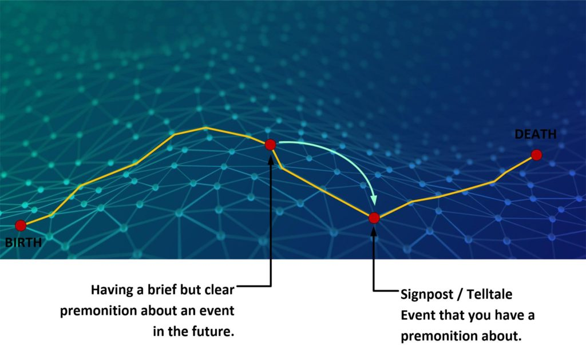
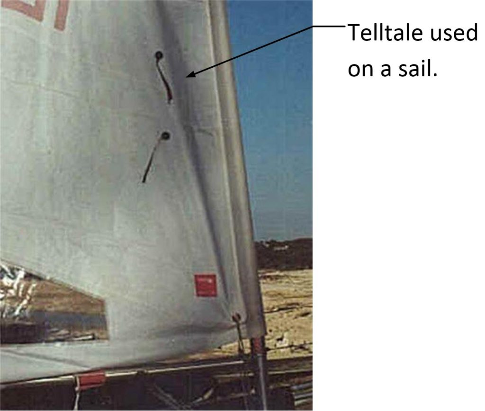
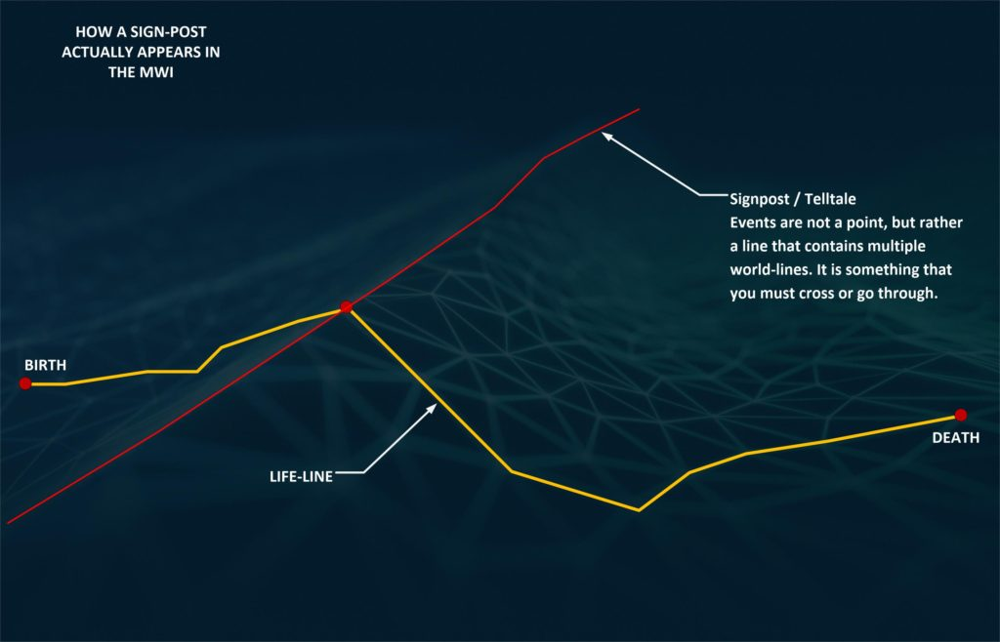
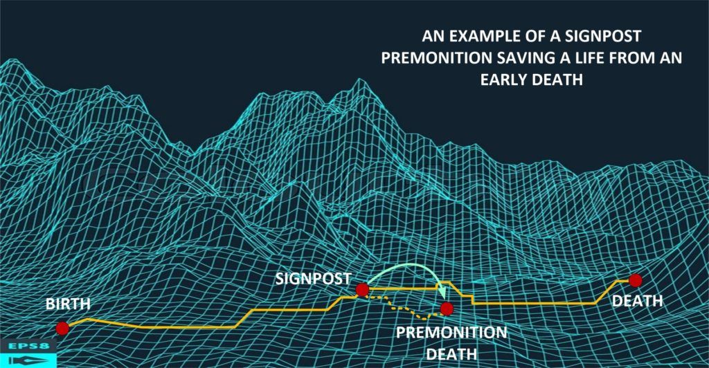
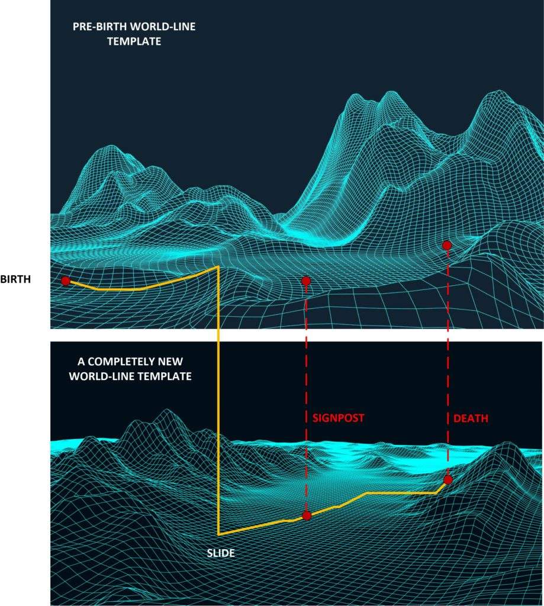

Here we are going to look at premonitions. We are going to place them in context with prayer campaigns, and how everything works together and why.
Not your “run of the mill” article. Is it?
Another amazing title. But then again, that’s exactly what we are going to discuss here. We are going to look at ways to hone our affirmation prayer campaigns. And, more specifically, how to provide (what I refer to as) “sign-posts”, to reassure us that we are following the right path. This is an advanced post. I do hope that you all take your time and read through it slowly. It’s got some great stuff here.
Essentially, the primary purpose of this post / article is to reiterate the importance of the pre-birth world-line template (PB-WL-T). Further, that while you can make some (more or less) “cosmetic” changes to your life through thought navigation, some events are beyond your ability to alter. The events are “set in stone” and unalterable.
- You can “slide” off your pre-birth world-line template.
- But there are still events that are unalterable and unavoidable.
- These events are birth, death and signposts.
Long time readers to MM might find this disgusting and distasteful. But it need not be. It just states that there are limits to your ability to navigate using thoughts. And you need to take this into account when you perform world-line prayer intention campaigns.
An unchangeable future
Right now I am going to posit the idea that while your ability to perform intention prayer campaigns does actually work, that there are certain elements of your life that are extremely difficult to change. All being nearly unchangeable by you, the operator of your consciousness.
In general, and understandably, these unchangeable events fall into three broad categories.
- Your birth. Time, place, and situation.
- Key “sign posts” that are placed there intentionally by your soul to assist in your navigation efforts.
- Your death. Time, place and situation.
So, listen up.
The first shocker; You cannot use an intention prayer campaign to prevent your demise, or alter your pre-birth world-line template. Sorry. My guess is that you probably thought that you could.
You [1] need to pay attention, and [2] you need to work with the “cards that you have been dealt”.
But, it need not be horrific
So don’t get all hot and bothered about fate. Your soul established this particular life for the obtainment of experiences, and the pre-birth world-line template was chosen for a reason. Your start and end dates for this block of experiences is all predetermined. That’s just the way it is.
And what’s more, your soul set up “signposts” that will alert your subconscious to keep you on the proper life-path.
By learning to look for these signposts we are better able to navigate though our reality, and still obtain the very important life experiences that was intended by our soul prior to our birth.

A signpost example.
By being alert and aware, we can have glimpses of our reality independent of time. We can see images, if a fleeting glimpse, of an event that is a signpost within our life. No special training or ability is necessary. All humans can do this. It’s just that most are not aware of this, or of this ability and are unaware of what it actually is, or it’s innate importance to us.
The second shocker; all humans have the ability to glimpse into their future. But they can ONLY glimpse the solid unchangeable events; birth, death and signposts.
Perhaps this personal example from Metallicman might be of interest and might make a nice illustration.
In one of my jobs, we had moved the company offices from one building to another across town. During the move, of course, we ended up moving the various office equipment, desks, and materials. While I was having the workmen move my desk into the office, I had a strong, but very brief, image. I imagined myself getting bad news. I leaned on the desk with my hand covering my forehead, and holding the telephone in the other hand. While the image only lasted one second in duration, it was quite clear. I "saw" the orientation of the desk, where my high-backed chair was located, the painting on the wall, and the location of the windows. I did not know of the details all that much. I just knew that it was "bad news" and that I dealt with it. I also knew that it would take place in my future. In order to prevent that future from occurring, I decided to purposely relocate my desk orientation. Instead of facing my back to the wall (as I observed in my premonition), I placed the windows to my back. Thus, I completely reordered my office so that it would not in any way resemble the premonition that I observed. In short, I tried to prevent the future from occurring to me. Two years passed. Yet, even with my office completely the altered, the future was (itself) not altered. I ended up getting a bad phone-call, and I too sat in my chair, at my desk with one hand on my forehead and the other holding the telephone. The event still occurred, though I had altered the minor aspects of the office.
If you all are paying attention you might want to take notes.
I could change the events in my life, and I could rearrange the events and situations of the world around me, but I could not postpone, delay, or change that key “signpost” event. In short, that event was a pivotal moment in my life, and in my work relationship.
It was unchangeable, though I did try to change it.
What else can we learn…
Look at the event and learn from it.
- I had a one-second glimpse into my future.
- I understood the context regarding that glimpse, but not the details.
- I tried to prevent the event from occurring, but failed.
- That event was a pivotal moment. Almost all premonitions are important moments.
- There was nothing that I could do, sort of really radical changes to my life, that could alter that event.
Some definitions…
Premonition | Definition of Premonition at Dictionary.com https://www.dictionary.com/browse/premonition noun A feeling of anticipation of or anxiety over a future event; presentiment.
And do not “poo-poo” this situation away. Most humans have experienced premonitions at some point of their lives.
presentiment Since the 1990s, parapsychologists have carried out research into an unconscious form of precognition termed presentiment. Using experimental techniques well-established in psychophysiology, subjects in controlled experiments have been found to unconsciously anticipate stimuli to which they are randomly exposed, to a degree that is highly statistically significant. The effect is small but the findings have been widely replicated. -PSI Encyclopedia
A life-line differs from a world-line…
World-line A fixed, and frozen moment in time. It can describe any set of conditions from 1776 in Boston, to 4567 and more...
And time…
Time Time is the apparent movement that our consciousness observes as we move from one world-line to the next.
Which then opens up to…
Life-line A life-line is the vector path that our consciousness moves upon. It is a collection of all the world-lines that we have visited, and those that we will visit in the future.
And what we are doing here…
We are using inherent presentiment to locate “signposts” that will give the consciousness guidance.
Signposts are “tell-tales” that indicate whether or not we are following the intention goals of the pre-birth world-line template.
We can navigate all we want using prayer and intention, and we can conduct slides as well, but a deviation away from our real purpose in this life is ill-advised and not beneficial to our soul.
5.3 - Sailing To Telltales — UK Sailmakers https://www.uksailmakers.com/encyclopedia/53-sailing-to-telltales These yarns or “ticklers” monitor the flow of wind across the sail. Telltales are used for fine tuning your genoa sheet trim and to fine-tune the course you are steering. Telltales are only an aid when the sail has wind flow across both sides, i.e., when sailing angles between beating and beam reaching. When sailing lower than a beam reach, the sail is catching wind instead of working like an airfoil.
What are your Telltales Telling You | Sailing World https://www.sailingworld.com/what-are-your-telltales-telling-you There is an old sail trim adage, “trim the front of the jib and back of the mainsail,” or where the wind meets and leaves the sail plan. Telltales are a key tool helping you figure out what is...
Telltale | Definition of Telltale by Oxford Dictionary on ... https://www.lexico.com/en/definition/telltale 2.1. (on a sailboat) a piece of string or fabric that shows the direction and force of the wind. ‘If the outside telltale flutters, let the sail out.’. More example sentences. ‘Flags and pennants are also used as telltales on a sailing ship that show the direction of the wind.’.
For our purposes, a “sign post” serves the same purpose of a “telltale” on the sail of a sailboat. It tells you the direction of the wind and helps you adjust (trim) your sails for optimum life experience.

Quick summary
Premonition = Consciousness observation of a soul’s “sign-post”.
Signposts = Telltales on a life-line
Telltales = Presentiment regarding fixed events in a life-line.
Life-line = The path through world-lines that our consciousness experiences while alive.
What are “signposts”?
To learn what a “signpost” is, we need to use an example. For now, I will use a couple of televisions shows (American) that I think most MM readers will be aware of, if not active viewers.
Lately I have been watching the latest five seasons of the AMC television series “Better Call Saul”. I started watching it because I had become a big fan of a much earlier series titled “Breaking Bad”. And both are really great, and I am (or have been) enjoying them.
I am going to use these two television series to explain the importance of “signposts”.
For those that are unaware…
Walter H. White is a chemistry genius, but works as a chemistry teacher in an Albequerque, New Mexico high school. His life drastically changes when he's diagnosed with stage III terminal lung cancer, and given a short amount of time left to live: a mere matter of months. To ensure his handicapped son and his pregnant wife have a financial future, Walt uses his chemistry background to create and sell the world's finest crystal methamphetamine. To sell his signature "blue meth," he teams up with Jesse Pinkman, a former student of his. The meth makes them very rich very quickly, but it attracts the attention of his DEA brother in law Hank. As Walt and Jesse's status in the drug world escalates, Walt becomes a dangerous criminal and Jesse becomes a hot-headed salesman. Hank is always hot on his tail, and it forces Walt to come up with new ways to cover his tracks. —halo1k, jackenyon
I first started watching the televisions series Breaking bad when it first came out. Oh, around 2005 or so. It was a long standing series, and I managed to watch it while I was incarcerated, doing my time. In many ways, I could relate to his character. And the show itself was indeed, quite engrossing and entertaining.
Now, there was a character in the show called Saul Goodman. This fellow was the “criminal” attorney that Walter White used to get out of trouble with.
Now, Saul Goodman was quite the engaging fellow. He was colorful, interesting, a bit of a genus in the legal profession, and most certainly had an interesting back-story. And when the series ended, the fans clamored for more, and a second television show was birthed.
This second show was “Better call Saul”.
'Better Call Saul' is the origin story of a man trying to survive in a harsh, exploitative world where anyone and everyone will try and take him, and his dreams, down. Meet James M. McGill Esq. Attorney-at-law AKA Slippin' Jimmy AKA Saul Goodman. -Better Call Saul (TV Series 2015– )
OK. Now using these two television series, I will illustrate how “signposts” work.
Using the television series as a platform.
Both series are about the same group of people, the same periods of time, the same relationships, and situations, and the same conditions. Where they differ is in the view point.
- The first series, “Breaking Bad“, was about a chemistry genus with cancer; Walter White.
- The second series, “Better call Saul“, was about Sal Goodman, a conniving attorney.
So one series is from one point of view, and the other from another.
If you watched the first series in order you will know what actually happens to the various characters in the show.
- Walter White dies in a shootout.
- Jessie Pinkman escapes and is a really changed person.
- Tuco Salamanca dies.
- Saul Goodman buys a new identity and lies low in the middle of nowhere.
And when you watch the second series with “Better call Saul”, you do so knowing all this information.
Thus, watching the second series is a “flushing out” of background stories. It adds more depth to the characters, and you (the viewer) can see the greater depth of color and cultural and contextual interplay between the characters and their situations.
Or, in other words, you KNOW what will happen to the characters in the second series “Better call Saul”.
So…
Using the television series as an analogy…
Both of the two television shows have shared characters. And they both take place in the same “universe”. Which means that the characters are interconnected and the histories of each character is mirrored in the other series.
For our purposes, we can imagine that the first series (Breaking Bad) is a premonition. It is a glimpse into what will happen in the second series (Better Call Saul).
- First series “Breaking Bad” is a premonition.
- Second series “Better Call Saul” is the active life-line.
Examples
And in “Better call Saul” no matter how crazy the events become, and no matter what “cliff hangers” are provided for the viewers to endure, we know from our “premonition” (the first series) what will happen to them.
Typically, premonitions describe Signposts and the end of life events. Thus they have a reputation as harbingers of disaster and bad news. But that is not necessarily true. They are glimpses into fixed events that your consciousness will experience unless you make REALLY DRASTIC CHANGES to your life.
As some have done regarding premonitions avoiding death…
- A Psychic Premonition of a Fateful Day: 9/11 – LetterPile …
- Survey of Dreams and Premonitions about the 9/11 Attacks …
- 10 Unnerving Premonitions That Foretold Disaster – Listverse
- Dark Roasted Blend: September 11 Premonitions
- Exploring Premonitions of Death and Their Meanings ..
- The Christian and the Premonition l What Are Premonitions …
- 9/11 anniversary: Chalk drawing ‘premonition’ from 1980s …
- Premonition Dreams: A Blessing in Disguise or Evil …
- 10 Creepy Premonitions About The Sinking Of The Titanic …
- The Science of Premonitions – Guideposts
- The 9/11 victims who foresaw their deaths: New book claims …
Example 1 – Death
As I have stated, your birth on your lifeline, or pre-birth world-line template is fixed. But so is your death. If you are talented, or aware, or provide prayer questions looking for answers in your affirmation campaigns, you will be able to “image” your death.
A signpost premonition can tell us our mortality.
Consider the television show “Breaking Bad”.
We know, from the show, that the character Gus died by a pipe bomb.
Sharp-minded antagonist Gus Fring was killed by a pipe bomb explosion in Breaking Bad season 4, in one of the show's most shocking and memorable moments. Gus actually managed to briefly walk away before succumbing to his injuries. -Breaking Bad: Is Gus Fring's Death Realistic? | Screen Rant
Yet, as we watch the show “Better call Saul”, Gus is alive and well. As the show takes place before the death scene.
Thus the scene from “Breaking Bad” is a premonition, or a Telltale / signpost, of the televisions show “Better call Saul”. Because when you are watching the television show “Better Call Saul”, Gus Fring is alive and is the middle of dealing with all sorts of issues.
It is so easy to get caught up in the show, and to forget that Gus Fring is fated to die. As we see him interacting with people and dealing with the issues of the day.
A signpost (premonition) is often associated with fixed and certain events that are very difficult to change. Like the birth event, or the death event. Thus, most people associate premonitions with bad news. But it need not be that way. It is just an understanding that your time on this earth will end, and the conditions of your ending will be made clear to you.
Example 2 – Prepare for a life altering event
Often, a signpost is not a birth or death event. But rather it is a significant event that will change the path that we are on. It doesn’t mean that we will die, or that anything “bad” will happen, but rather it is an illustration to tell us what to look forward towards, and not to be fearful of it.
A Signpost premonition is used to confirm or allay our fears.
If you are wondering what will happen in your future, and you don’t know how things will pan out, good or bad… and you just cannot top fretting about it… a signpost premonition can be used to allay your fears.
In the television show “Better call Saul” we really don’t know how things will work out in an episode by episode basis. Saul Goodman has all kinds of issues and the show is a roller-coaster of risk, emotions and the ups and downs of his adventures.
Never the less, we are always reminded at the start of the show what actually ends up happening.
Better Call Saul contains flashforward sequences showing Jimmy McGill now working at a Cinnabon as Gene, and here's why he ended up there. Introduced in season 2 of Breaking Bad, Walt and Jesse's "criminal lawyer" Saul Goodman (Bob Odenkirk) would become one of the most important characters on the series. He was also one of the few major figures to end the show alive, making the smart move to get the hell out of dodge - or in this case Albuquerque - before things really hit the fan. In Better Call Saul, fans have gotten to witness Saul's journey from small-time hustler Jimmy McGill, to briefly respectable attorney Jimmy McGill, to go-to lawyer for the New Mexico meth trade. Well, he's not quite there fully yet, but presumably will be by the end of the spinoff. As Better Call Saul goes on though, it's becoming more and more like Breaking Bad, which doesn't seem to be bothering fans. The fact that Saul Goodman is spending his time after Breaking Bad managing a Cinnabon in Omaha is a direct callback to the final conversation had between Saul and Walter White before they parted ways for good. Both men were holed up in a bunker owned by Ed, the man who specializes in making people disappear, and giving them new identities. Saul says to Walt, lamenting their perilous situation at the time, "If I'm lucky, month from now, best case scenario, I'm managing a Cinnabon in Omaha." Sure enough, that's where he ended up in Better Call Saul. -Screenrant
No matter what happens, we know that Saul Goodman will managed to untangle from the mess that he is in and survive as a franchise manager at a Cinnabon.
Premonition signposts can be used to allay your fears and concerns about the future. When you see yourself in those future events, you will get the understanding that no matter how bad things look, you will end up attaining that signpost event.
Example 3 – Unresolved event
Not every event that we have a signpost for; a telltale, or a premonition of provides us with answers. Sometimes they just provide us with questions. And something to be alert during.
A Signpost premonition can be an alert.
Regarding the television show “Better call Saul”. A major character in this season is Nacho Varga. He is a reluctant man who is getting sucked into a big-time drug cartel, the Salamanca’s. He is doing so in an effort to protect his father, but everything is beyond his control, and so he is all caught up riding the stream to it’s ultimate conclusion…
…but we don’t know what will happen.
At the end of season five, of “Better call Saul”, Nacho Varga assists in the attempted killing of Lalo Salamanca. And it is dicy. Not only is Lalo Salamanca a very bad and sadistic kind of fellow, but he knows or suspects that Nacho Varga was involved in the attack. And everyone watching the show is left hanging…
…what is going to happen?
Nacho Varga is a “good guy”. Lalo Salamanca is a bad guy. And he survived. It looks like there is going to be a very nasty turn of events for poor Nacho…
But…
But…
We know from “Breaking Bad” some background information that is not evident in the series “Better call Saul”…
Ignacio Varga, popularly known as Nacho Varga, was played by Michael Mando in Better Call Saul. He played the character of an intelligent criminal and was the right-hand man to Tuco Salamanca, heir of the crime family. Nacho Varga was not a part of Breaking Bad but his name was mentioned a few times on the show. However, after Breaking Bad ended, fans raised questions regarding the disappearance of Nacho Varga. What happened to Nacho Varga? Nacho in Better Call Saul Nacho played a key role in the prequel show Better Call Saul. He murders 1 member of the Espinosa Gang and is also connected to murder 21 members of Espinosa Gang. Although Nacho does not make an appearance in Breaking Bad, he is briefly mentioned by Saul Goodman in season 2 of the show. Nacho is kidnapped by Walter White and Jesse Pinkman on December 4, 2008. Saul Goodman mistakes them for the cartel and also blames Nacho, for he thinks the cartel is angry with him. After his disappearance from the show, this raised a few questions amongst the fans and left them wondering whether Nacho is dead or is he in jail. After being mentioned in season 2, Breaking Bad never revealed the fate of Nacho. Saul Goodman just assumes it was him when he was kidnapped by Walter and Jesse and it is just a sign that this man means business. So viewers don’t really know if Nacho ends up living in Canada or is actually killed for his spy games. While his narrow escapes in the past have given a conclusion that Nacho Varga might have been dead in Breaking Bad, nobody is able to give a conclusion yet. -Republicworld
And that situation is carried on into the second series “Better call Saul”.
Now…
We, the viewers do not know what is going to happen. We tend to like the character, but we know that things are not going well for him.
A premonition regarding events about this character; what we know from “Breaking Bad”, tells us nothing about how he dies. We only know that he “disappears”. And that knowledge is the ONLY significant insight that your consciousness is permitted to have at that time.
Not every “signpost” is in regards to bad news, death or destruction. But rather they provide insight to the situations and conditions that you are involved in.
Misunderstanding a signpost.
I want to relate a premonition that my first wife had while we were in the middle of some financial distress. We were all pretty upset about it, and didn’t know when our next meal would come from. Then, out of the blue, she had a flash vision. It was a premonition of us living in Greece and it was beautiful.
WTF?
At that time were were living in a mobile home, and yes, I was “down sized” again without notice. Our vehicle was kaput (means broken down and non-functioning), the hot-water heater was broken, and we were taking cold showers during ice storms. Luckily we had some oatmeal that we could live off of, and that sustained us for a while
But Greece? WTF?
She was absolutely convinced that we would be living in Greece, and it was so very beautiful. The skies were pristine blue, the grass was lush and green, and the pillars were classic Greek. She said it was wonderful and nearby was a brilliant lake where ducks would fly.
That is not the Greece that I am familiar with.
The “Greece” that my first wife described consisted of plenty of tree, tall stone Greek pillars, and a large lake full of geese and ducks.
I let the narrative “roll over my shoulders”. I was just happy that my wife wasn’t fretting so much over our future.
Ten years passed.
And we were living in Massachusetts. On a weekend we went to visit a park in Rhode Island. The park is the Roger Williams Park. And yes it is beautiful. It was there my wife exclaimed that the park was the exact replica of the “life in Greece” that she had the vision of.
All in all, this vision that my wife had was a signpost, or a telltale. It was a premonition that helped my wife put her fears at rest. For she saw clearly that we were doing well and living in a nice area.
Signposts or telltales are premonitions that are useful for our consciousness to view while we are in the middle of a difficult life-line.
So what is a “person’s life” actually?
Which now opens up to a really deep subject. Do we really have any control over our life? And the answer to that is…Yes, we do.
But the entire lifetime is “bracketed”. It has a start, and an end. It also have “anchors” or “way points”, or as I like to say, “signposts” that we use to keep us on track during our entire life.
Tips and tricks.
In general, we can use our thoughts to navigate though out our lifetime. But it will be a difficult task to change our birth date, and our date of death. These are all established long before our pre-birth world-line template was affixed and imprinted upon our consciousness.
Our consciousness is assigned a task by our soul.
This task is to collect and obtain experiences. These experiences collect quanta relationships and form long-standing bonds. How we go about doing so will affect the growth of our soul. Therefore, it is important that the soul controls the LIMITS of our behaviors.
The soul creates a road-map of sorts. We have a start and a finish. And we are given way-points or sign posts that we can look towards to verify that we are not deviating too far off the path. We can have glimpses of these events.
When we have a glimpse of these sign-posts we call that a premonition.
There are different reasons for having a premonition, however it has been my experience that they are useful to help reset our emotions from running amok. News, most especially bad news, circumstances, people, stories and all the rest can get our mind all worked up into a tizzy. When that happens, our emotions are triggered, and a fear-induced fight or flight reaction starts to manifest. This is counter productive.
So glimpses of our future, if only momentary, are useful for keeping us on track and following the proper path.
How to access signposts
If you are running an intention prayer campaign and you want to have some control over accessing premonitions, then it is as easy as adding an affirmation saying so.
- I have the ability to have premonitions regarding key events in my life, especially future events. These premonitions are triggered when I need them and they are useful in controlling my emotions and helpful in decision making.
It’s all just that simple. Just add this desire into your affirmation prayers, and don’t worry about it.
Can you avoid a signpost?
No. You cannot avoid a signpost unless you have radically, and substantially altered your active life-line to such an extent that the slides have placed you way off your intended track boundaries. The signpost is never a singular fixed world-line. Rather it is a string, or a region of world-lines, like a fence that you must pass through to continue on with your life.

What about those who get a glimpse of a disaster and avoid it?
Are they avoiding their death?
I posit that they were NEVER intended to die, and the premonition of the upcoming disaster is a signpost (not their death) so that they will INTENTIONALLY avoid a problematic future.
How can you, as an individual consciousness, tell?
Short answer: I do not know. My “gut feeling” is that YOU will know. You will know whether your signpost is one upon which you take action, or whether it is a view of your death as pre-determined as part of your pre-birth world-line template criteria.

What about sliding off your pre-birth world-line template?
These rules about boxing in a life-line holds true whether or not you use affirmation campaigns to slide off your pre-birth world-line template.
There is a start date and conditions, and there is a end date with conditions. Your slides might alter some (some) of the conditions, but it will not negate the ultimate closure events. The same holds true regarding signposts (telltales).
Look at the following illustration…

Now, I think, or do believe that it is possible to “cheat death” and avoid severe conflict or extraordinary trouble. However, the actions that you must do in order to accomplish this task is in itself extraordinary.
And what about MM?
Well, I can see many (if not all) of my signposts. The truth be told, my soul jam-packed a lifetime of experiences in a very short lifespan. I am sure that there is a reason for this. But what ever the reason is, I do not know and cannot enunciate. Apparently I must have “signed up” and agreed to some pretty involved things long before I was born.
Apparently. I guess.
And you the reader, are supposed to be reading this. For what ever reason that might be suitable for you.
I cannot believe that I am wholly unique. Instead, I believe that I am but a small part of something larger, and with that, all the MM readership are all part of a larger group that shares in our great growth and adventures. What ever they might be.
Not specially chosen, mind you, but rather souls that stepped up front and volunteered.